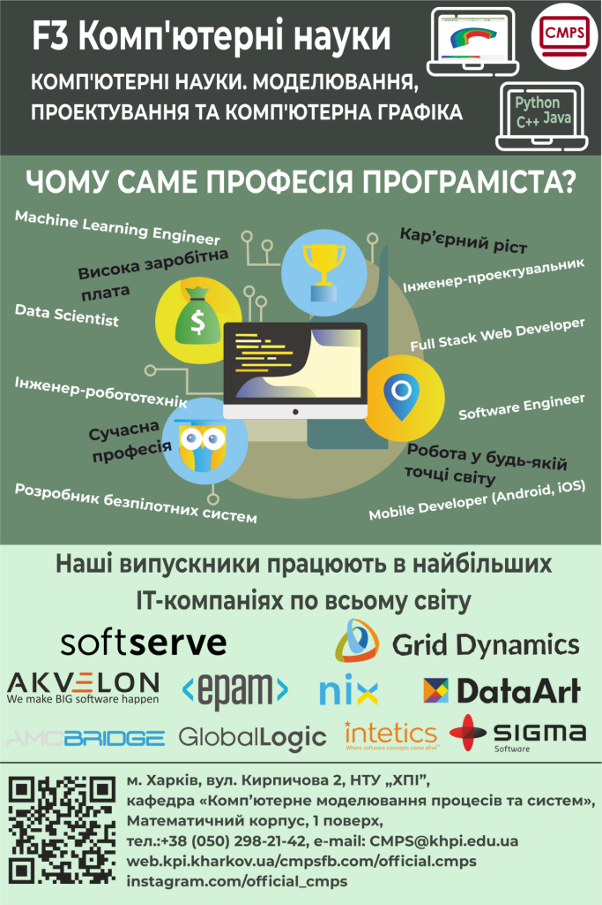
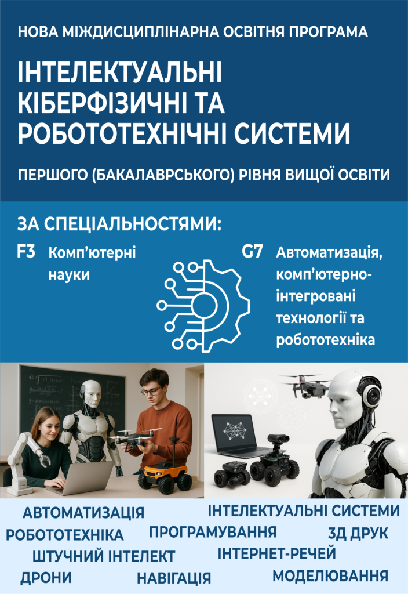

Кафедра комп'ютерного моделювання процесів та систем
Національний технічний університет «Харківський політехнічний iнститут»
Про кафедру
- Наука: На кафедрі під керівництвом п’ятьох докторів наук виконуються наукові та прикладні дослідження у напрямку розробки спеціалізованих програмних засобів для проєктування
та аналізу експлуатаційних характеристик конструктивних елементів авіакосмічного та енергетичного машинобудування,
систем управління та навігації БПЛА, робототехнічних систем. - Міжнародна діяльність: Напрямки інтернаціоналізації навчальної діяльності кафедри включають обмін студентами та аспірантами з університетами Німеччини, Польщі, Китаю, Канади,
розробку спільних навчальних планів, поїздки студентів на практику.
Викладачі та аспіранти кафедри проводять спільні наукові дослідження з науковцями університетів Магдебурга (ФРН), Монреаля (Канада) та Вейхай (Китаю). - Кафедра має обширні зв’язки та договірні відносини з IT компаніями міста Харкова та України.
Насамперед компанії активно долучають до освітнього процесу: участь у проектному навчанні, організація практики студентів та дуальне навчання студентів старших курсів.
Наші партнери: SoftServe, Akvelon, Grid Dynamics, EPAM, Global Logic, CodeIT, NIX Solutions, AMC Bridge.
Вас вітає колектив кафедри комп’ютерного моделювання процесів та систем!
Кафедра була створена в 1964 році для підготовки кадрів вищої кваліфікації, які володіли б як практичною інженерною підготовкою, так і фундаментальними знаннями в галузі математики та інформаційних технологій. Система навчання студентів, створена на той час у інженерно-фізичному інституті, стала використовуватися для підготовки інженерів – розробників систем управління різних літальних апаратів, в тому числі і космічних.
Протягом минулих десятиліть кафедра випустила понад півтори тисячі фахівців, які працюють на таких підприємствах, як НВО «Хартрон-АРКОС», завод ім. Шевченко, ТОВ НВО «Вертікаль», SoftServe, Grid Dynamics, EPAM Systems, Intetics, DataArt, Nix Solutions, Global Logic, НДІ комплексної автоматизації, в університетах і наукових інститутах.
В даний час кафедра готує бакалаврів та магістрів за спеціальностями:
Спеціальність: «F3 Комп’ютерні науки»

Міждисциплінарна спеціальність: «F3 + G7 Комп’ютерні науки + Автоматизація, комп’ютерно-інтегровані технології та робототехніка»
